Creating a Golf Ball
This tutorial will go through the process of creating a non-trivial 3D model. We will explore:
- The basic structure of the Python script.
- Some of the capabilities of Trimesh.
- Basic debugging
- Exporting the created 3D mesh for use by other programs.
Let's get started!
The Scenario
You have a golf date, but have misplaced all of your golf balls. You decide to 3D print some.
Step 1: Set Up
Follow the instructions in Getting Started
Step 2: Create a Ball
The first task is to create a ball.
- Create a python file, and call it
golf_ball.py.- This must be in a location that has access to wherever you installed Trimesh and SCADview in the set up.
- If you installed system wide, then anywhere on your system is fine.
- If you've installed in a virtual environment, then place this file in the same environment.
- We want to use Trimesh to create a ball, so we look at Trimesh's creation api and see icosphere which seems appropriate.
- Edit
golf_ball.pyin your favourite code editor and write:from trimesh.creation import icosphere def create_mesh(): return icosphere() - Let's see what it looks like.
If you haven't already, run from the command line:
The SCADview UI should appear.
scadview
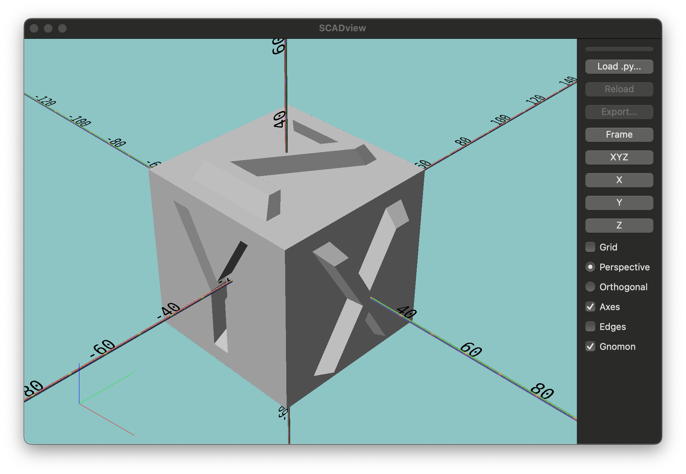
The first time you run SCADview, it can take longer to appear, but subsequent starts should be almost instant.
- Click the "Load py..." button.
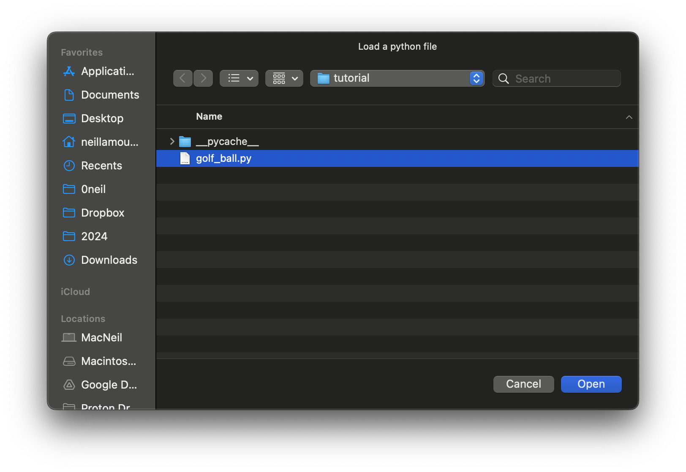
- This opens a file dialog.
Choose the file you've just created,
golf_ball.py. - This should load the file and show you a sphere.
- If you don't see a sphere,
check the output from the command line for any error messages
and edit
golf_ball.pyto fix them. - Click the "Reload" button to reload the file; if all errors are corrected, you should see the sphere.
- This opens a file dialog.
Choose the file you've just created,
Step 3: Experiment with icosphere
Let's take a look at what options icosphere has to offer.
The api docs show 3 parameters:
subdivisionsradiuskwargs
Let's see what subdivisions does,
and then choose a good radius for our golf ball.
We are going to ignore kwargs.
Subdivisions
Our plan is to put one dimple in each subdivision, so let's see what 1 subdivision looks like.
-
Change the code to set
subdivisions=1and press "Reload":from trimesh.creation import icosphere def create_mesh(): return icosphere(subdivisions=1)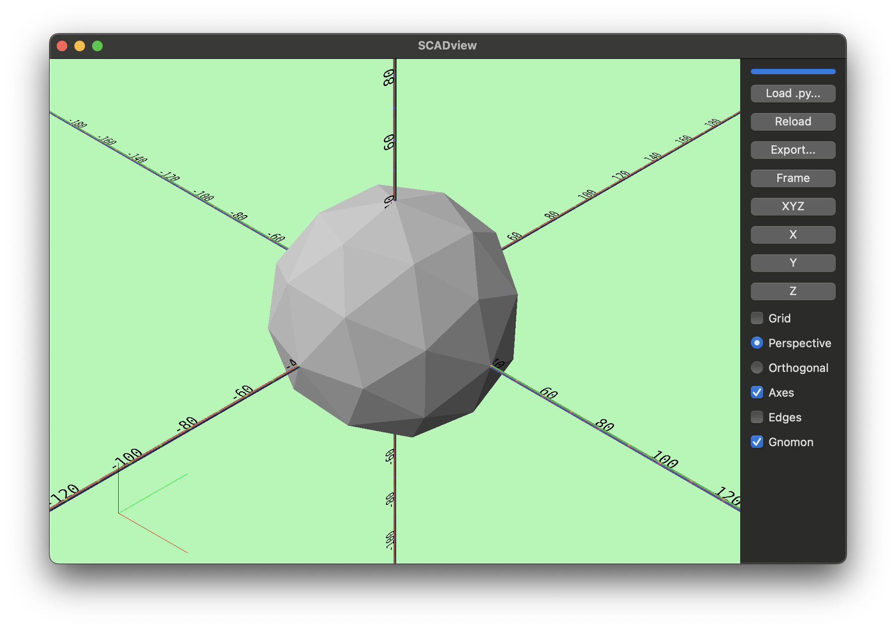
Hmmm... looks like it could be smoother. Let's get some information about the ball.icosphereis a Trimesh, which has a wealth of attributes and methods you can use on meshes you create. Let's add a print statement to show the number of vertices and faces:Note that we have now created variable,from trimesh.creation import icosphere def create_mesh(): ball = icosphere(subdivisions=1) print( f"Created ball with {len(ball.vertices)} vertices and {len(ball.faces)} faces" ) return ballball, so we can get some information about it before we return it as the output of thecreate_meshfunction. -
Hit "Reload" and check the output in the command line:
Created ball with 42 vertices and 80 faces
80 faces means 80 dimples with our 1-dimple-per-face-plan. We read the "Golf ball" Wikipedia article and discover:
- There is no limit to the number of dimples.
- Most golf balls have 300-500 dimples.
- The record is 1070 dimples.
So we'd like to be in the 300-500 range,
let's up sudivisions=2 by editing one line:
ball = icosphere(subdivisions=2)
Created ball with 162 vertices and 320 faces
subdivisions=3
Radius
If you look at the golf ball, you can see that it is intersecting the axes at +50 and -50, so its default radius must be about 50.
Let's check that Wikipedia article for information about the size of a golf ball. It says a golf ball must have a diameter of not less than 42.67 mm. (We will use metric measurements - but SCADview itself does not assign inches, millimeters, or any other size to the units).
Let modify that one line again and press "Reload":
ball = icosphere(subdivisions=2, radius=42.67/2)
But it looks like the same size! This is because SCADview reframes the model when it is reloaded. If you look at the axes, you can now see that the golf ball intersects at about 20, so its radius is about 40.
Interlude: Play with the UI.
Let's see what you can do with the SCADview UI. We've already used a couple of buttons, but now please go to the user interface and learn about all of the buttons. Once you are done exploring, return here to continue the tutorial.
Step 4: Add Dimples
Now we want to add dimples. We will add a dimple at the center of each face, sizing them somewhat smaller than the face.
Let's start by adding one dimple.
- We don't know the right size yet, so let's start with 1 mm diameter
- We create a
icosphereof 1 mm diameter, and "subtract" (remove it) from the ball. - We add a line to create a dimple,
and return
ball.subtract(dimple) - Notice that we
apply_translationto move the dimple to the edge of the ball, in this case to the top (the z direction is up).
from trimesh.creation import icosphere
def create_mesh():
ball = icosphere(subdivisions=2, radius=42.67 / 2)
print(
f"Created ball with {len(ball.vertices)} vertices and {len(ball.faces)} faces"
)
dimple = icosphere(subdivisions=2, radius=1 / 2).apply_translation([0, 0, 42.67])
return ball.subtract(dimple)
Red Screen
After pressing "Reload", something bad happens - no ball, and the screen turns red. Something when wrong!

The screen turning red indicates a problem with your code. Check the command line output. In this case we see:
[MainProcess 44881] ERROR scadview.ui.wx.main_frame:
'Trimesh' object has no attribute 'subtract'
Oh - right, my fault,
we used the incorrect name for "subtracting" a mesh from another.
The correct name is difference, so let change the return line to:
return ball.difference(dimple)
Great! Now the ball is showing again, the background is green (which is good).
But no dimple. You can move the camera all around but the dimple does not show anywhere. Something else is wrong. You probably saw it in the script, but let's suppose you don't know what is wrong.
Step 5 Debug
We are going to try out SCADview's unique debugging tool:
- "Debug mode" enabling viewing multiple meshes at the same time, with transparency and colors.
So let's try it out.
Debug Mode - Return a List of Meshes
To enable seeing multiple meshes, for example, before we combine them, we return them in a list.
So let's:
- Make the dimple bigger so that it is easier to see (say
radius=10) - Comment out our
returnline and instead have:dimple = icosphere(subdivisions=2, radius=10).apply_translation([0, 42.67, 0]) # return ball.difference(dimple) return [ball, dimple] - Press "Reload" and we see two balls - in glorious, semi-transparent colors.
- By returning a list of meshes, SCADview goes into "debug mode".
- Debug mode makes each mesh semi-transparent, so you can see meshes inside of other meshes.
- It also colors the meshes, so you can distinguish them more easily.
Why didn't we see the smaller ball (the dimple) above? What happens is if we subtract ("difference") the smaller ball from the larger ball and they don't intersect, all that happens is that the dimple disappears, and the large ball remains unchanged.
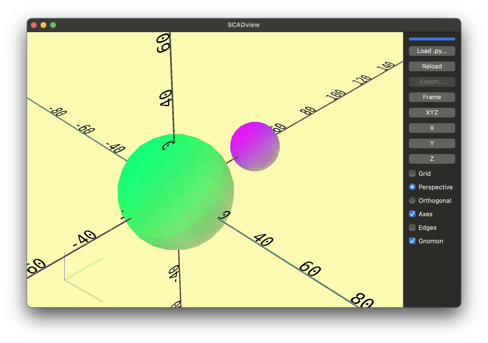
- Of course! - we moved the dimple the full diameter instead of the radius
- We need to halve the diameter - that is 11.335.
dimple = icosphere(subdivisions=2, radius=10).apply_translation([0, 11.335, 0]) - Press "Reload".
- Now we can see that the large dimple is completely inside the golf ball! What!?!
- Through the magic of debug mode, we can see through the golf ball and see the dimple inside.
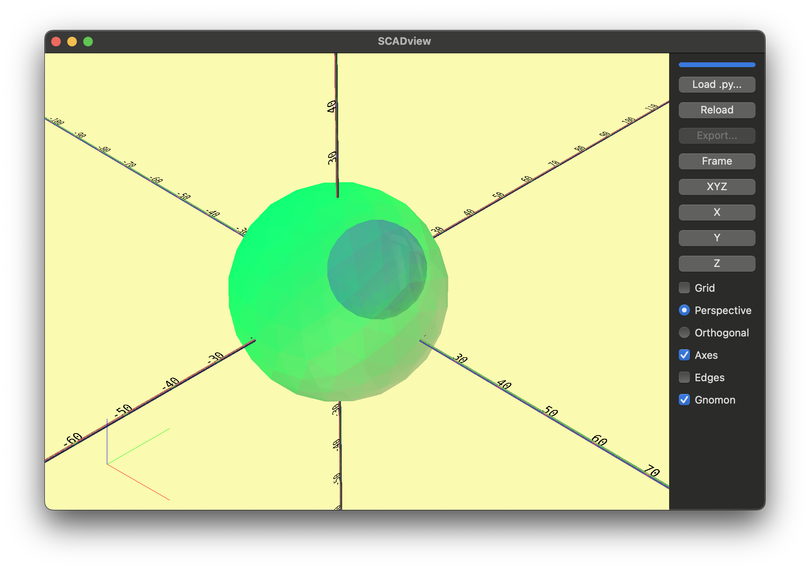
- Through the magic of debug mode, we can see through the golf ball and see the dimple inside.
Again, you probably saw how I messed up. I shouldn't have done the math in my head! I should have moved the dimple to the radius of the golf ball.
All of these numbers are getting confusing.
Let's clean up the script a bit by giving names to some of our values.
This makes the script easier to read,
and easier to modify.
We will add some "constants" before create_mesh :
...
GOLF_BALL_RADIUS = 42.67 / 2
DIMPLE_RADIUS = 10
SUBDIVISIONS = 2
def create_mesh():
...
from trimesh.creation import icosphere
GOLF_BALL_RADIUS = 42.67 / 2
DIMPLE_RADIUS = 10
SUBDIVISIONS = 2
def create_mesh():
ball = icosphere(subdivisions=SUBDIVISIONS, radius=GOLF_BALL_RADIUS)
print(
f"Created ball with {len(ball.vertices)} vertices and {len(ball.faces)} faces"
)
dimple = icosphere(
subdivisions=SUBDIVISIONS, radius=DIMPLE_RADIUS
).apply_translation([0, GOLF_BALL_RADIUS, 0])
# return ball.difference(dimple)
return [ball, dimple]
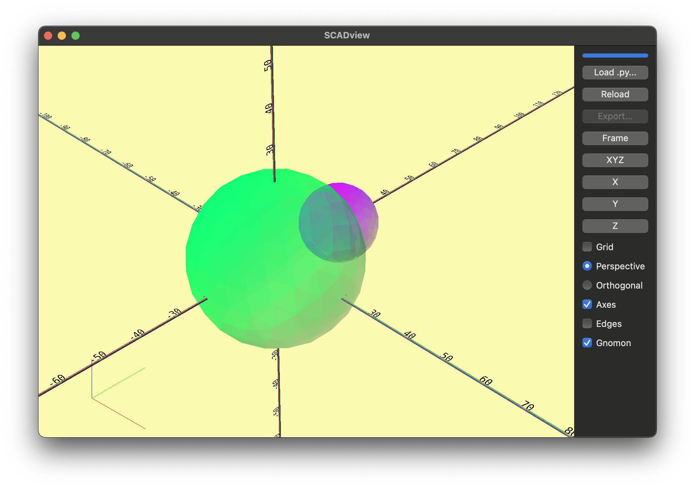
Step 6: Make all the dimples
Now it is time to make all of the dimples.
- Make a dimple for each face.
- Translate (move) it to the center of the face.
Trimeshes store vertices and faces as numpy ndarrays.
numpy is a very fast package for preforming calculations on large arrays.
We will take advantage of some of this,
but it can get confusing if we go too deep.
So we will just scratch the surface of what numpy can do.
Our strategy:
- Iterate through each face
for face in ball.faces: - Get the vertices for each face.
verts = ball.vertices[face] - Find the center of each face. We use the numpy
meanfunction.face_center = verts.mean(axis=0) - Find the distance from the first vertex in the face to the center.
We use the numpy
normfunction:dist_to_center = np.linalg.norm(verts[0] - face_center) - Make a dimple radius some fraction of this (say 1/6), and place at the center.
dimple_r = dist_to_center / 6.0 dimple_mesh = icosphere(subdivisions=2, radius=dimple_r, center=face_center) dimple_mesh.apply_translation(face_center) - Put this all together, plus:
- Replace
DIMPLE_RADIUSwithDIMPLE_RADIUS_FRACTION - Keep the dimples in a list
import numpy as np from trimesh.creation import icosphere GOLF_BALL_RADIUS = 42.67 / 2 DIMPLE_RADIUS_FRACTION = 1 / 6 SUBDIVISIONS = 2 def create_mesh(): ball = icosphere(subdivisions=SUBDIVISIONS, radius=GOLF_BALL_RADIUS) print( f"Created ball with {len(ball.vertices)} vertices and {len(ball.faces)} faces" ) dimples = [] for face in ball.faces: verts = ball.vertices[face] face_center = verts.mean(axis=0) dist_to_center = np.linalg.norm(verts[0] - face_center) dimple_r = dist_to_center * DIMPLE_RADIUS_FRACTION dimple_mesh = icosphere( subdivisions=SUBDIVISIONS, radius=dimple_r, center=face_center ) dimple_mesh.apply_translation(face_center) dimples.append(dimple_mesh) return [ball] + dimples
- Replace
This shows a transparent ball with a lot of small balls distributed around its surface. Not quite a golf ball, but it shows where the dimples will be and their size.
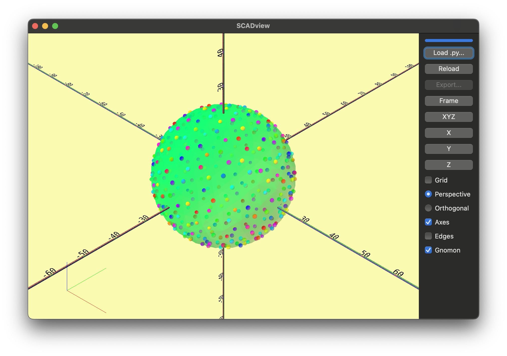
It looks good, but I want them bigger, so we setDIMPLE_RADIUS_FRACTION = 1 / 4
Step 7: Carve out the dimples
Now all that remains is:
- Carve out each dimple (
difference) - Return a final mesh (not a list) so that "Export" is available.
- You may have noticed that in "debug" mode, "Export" is unavailable.
Let's carve out each dimple.
- We add a line to remove each dimple after we create it.
- And we just want to return the final ball,
not a list of meshes.
We don't need to keep the
dimple_mesh.apply_translation(face_center) ball = ball.difference(dimple_mesh) # <- Added this line dimples.append(dimple_mesh) # return [ball] + dimples # <- Commented return balldimpleslist and add each dimple to it viadimples.append(dimple_mesh), but I have a premonition we may want it again later.
Press "Reload".
Hmm. That took longer to load. You might have some questions.
- Q: Why did the screen turn a light purple during the load.
- A: It always does that, to show that it is loading a script. It is not noticeable for a fast load.
- Q: What is that bar above the "Load .py..." button and what was it doing during the load.
- A: That is an "indeterminant progress bar" meant to show there is progress, but we don't know how much more to go. It also always shows progress during any load, but it is also not noticeable for a fast load.
- Q: Why so slow?
- A: The slowness is due to the complexity of boolean geometric operations.
Each dimple has 162 vertices, 320 faces and 480 edges,
as does the original ball.
That is a lot of intersections to calculate!
- A: The slowness is due to the complexity of boolean geometric operations.
Each dimple has 162 vertices, 320 faces and 480 edges,
as does the original ball.
- Q: Why is the ball gray?
- A: Since we are not returning a list anymore,
we are no longer in debug mode,
which has been setting the colors.
- If you want, you can set the color of a final mesh - see set_mesh_color
- A: Since we are not returning a list anymore,
we are no longer in debug mode,
which has been setting the colors.
-
Q: Where are the dimples?
- A: If you look closely, there are 1 or 2.
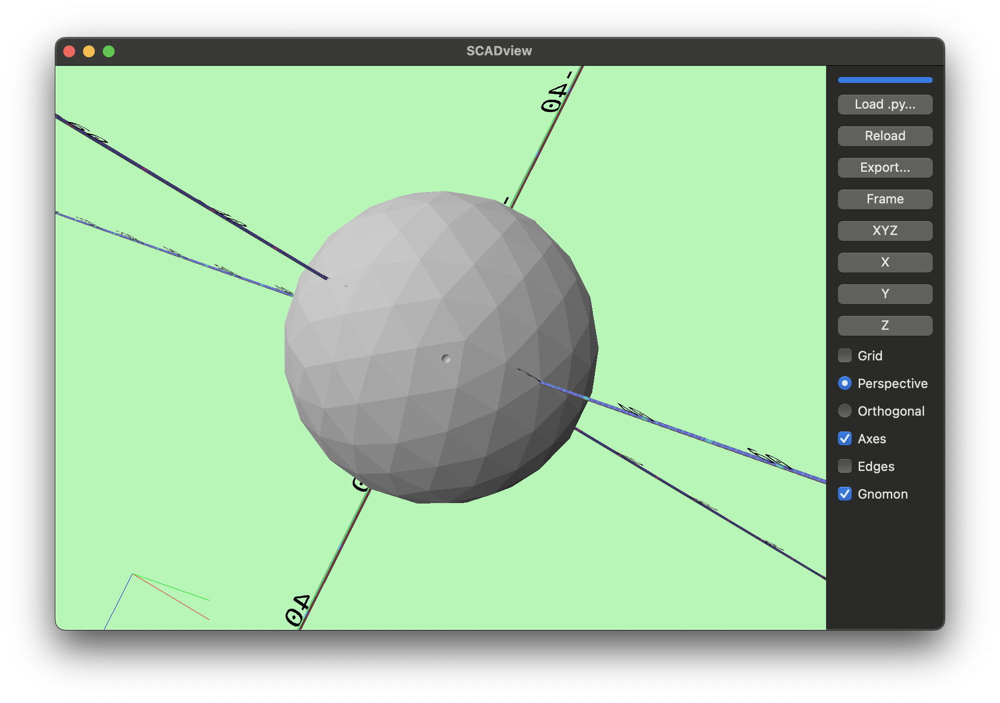
- A: If you look closely, there are 1 or 2.
-
Q: Where are the rest of them?
- A: Let's find out.
Step 8: Debug (Again)
To see what is going on, let's return the ball and dimples as a list again. This is a little different than before, because the ball we are returning this time should have had dimples removed.
dimples.append(dimple_mesh)
return [ball] + dimples # <- Uncommented
# return ball # <- Commented
- Press "Reload".
Whoa! That looks cool - like a small solar system in the ball.
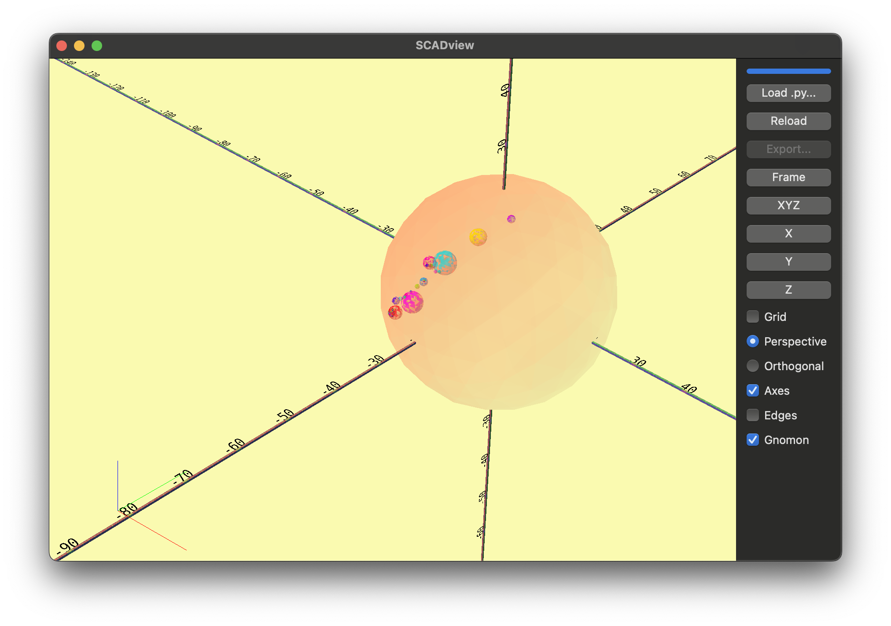
It is worth noting that we could have also written:
return [ball]
ball is in a list,
and we'd be in debug mode.
Feel free to try these out to see the difference.
A Subtle Bug
But why the "planets"?
This bug is more subtle than our previous ones. The problem is:
- We are iterating through the faces of the ball.
- But we are also modifying the ball as we do this.
- So the faces are being actively changed as we interate through them - and we are just getting weird results.
Step 9: Fix
To fix this, we will:
- Collect all of the dimples first without modifying
ball -
Then remove each dimple.
` # ball = ball.difference(dimple_mesh) # <- Commented dimples.append(dimple_mesh) for dimple_mesh in dimples: # <- Added ball = ball.difference(dimple_mesh) # <- Added # return [ball] + dimples # <- Commented return ball # <- Uncommented -
Press "Reload" and wait while it loads.
This looks good!
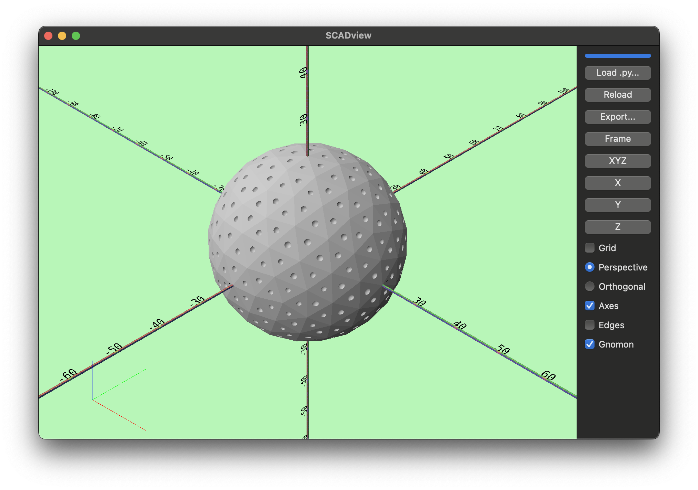
Let's removed the commented code, and so we have our final code:import numpy as np
from trimesh.creation import icosphere
GOLF_BALL_RADIUS = 42.67 / 2
DIMPLE_RADIUS_FRACTION = 1 / 6
SUBDIVISIONS = 2
def create_mesh():
ball = icosphere(subdivisions=SUBDIVISIONS, radius=GOLF_BALL_RADIUS)
print(
f"Created ball with {len(ball.vertices)} vertices and {len(ball.faces)} faces"
)
dimples = []
for face in ball.faces:
verts = ball.vertices[face]
face_center = verts.mean(axis=0)
dist_to_center = np.linalg.norm(verts[0] - face_center)
dimple_r = dist_to_center * DIMPLE_RADIUS_FRACTION
dimple_mesh = icosphere(
subdivisions=SUBDIVISIONS, radius=dimple_r, center=face_center
)
dimple_mesh.apply_translation(face_center)
dimples.append(dimple_mesh)
for dimple_mesh in dimples:
ball = ball.difference(dimple_mesh)
return ball
Step 10: Export
All that is left is to export the mesh for printing!
- Press "Export..."
- Select "File Type" as "OBJ (.obj)" (or whatever you need)
- Select what folder you want to save to.
- Press "Save".
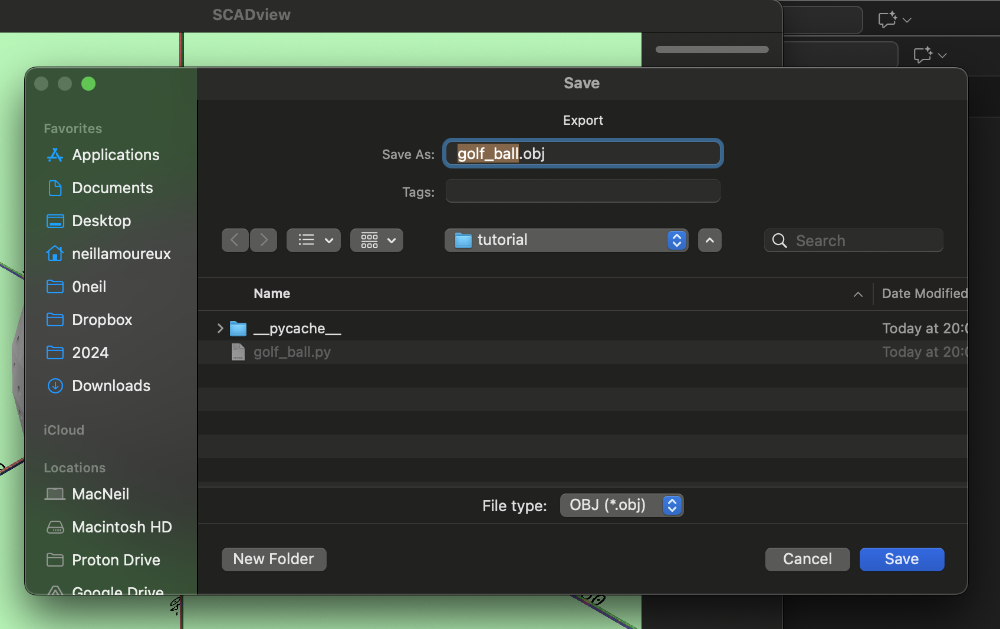
You should now be able to import into your 3D slicer, and create the necessary gcode file for printing.
Additional Topics
Creating Multiple Meshes for Export
The create_mesh() allows you to return multiple meshes in a list,
but this is "debug" mode,
and so you cannot export them.
To resolve this, union your meshes into a final mesh,
even if they are disjoint.
For example, for 3 meshes:
return mesh1.union(mesh2).union(mesh3)
Incremental Builds
If you have a complex build that takes many seconds, minutes, hours or more, you don't want to wait that long while debugging.
A couple of options are:
- Build a smaller, faster version. For example, with the golf ball, we could have use fewer subdivisions in the ball and dimples, and that would have revealed our bugs. Once fixed, we could revert to the lengthier build.
- Only build the problematic parts, hopefully quickly. Fix and iterate. Once the problems are fixed, add back in the rest of the build.
But SCADview also has an "incremental" build option.
In this option, instead of using the return ... statement,
you use the yield ... statement as you build your mesh.
This will send whatever you have built so far to SCADview,
and it will display it.
If you see a problem early on, you can make a change and reload before the previous load or reload completes.
Let's try this with the golf ball:
- Lets
yield balleach time we remove a dimple.
for dimple_mesh in dimples:
ball = ball.difference(dimple_mesh)
yield ball # <- Added
# return ball # <- Commented
You will see the ball, and then the dimples progressively appear.
You can also yield lists for debug mode.
Animation
An incremental build is an animation, and you can do other animations, like move objects around the scene, and then yield the new scene.
To add a little shake to the incremental build golf ball when it is done:
from time import sleep # <- Add at top
...
# After last for loop, add:
for i in range(100):
ball.apply_translation([0, 0, 1.0 - 2.0 * (i % 2)])
yield ball
sleep(0.03)